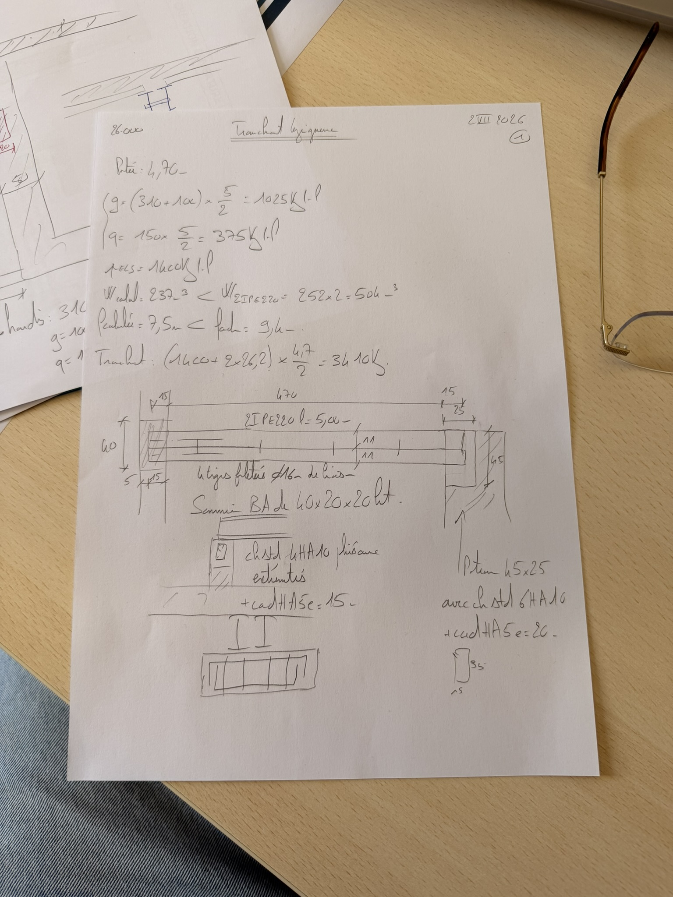
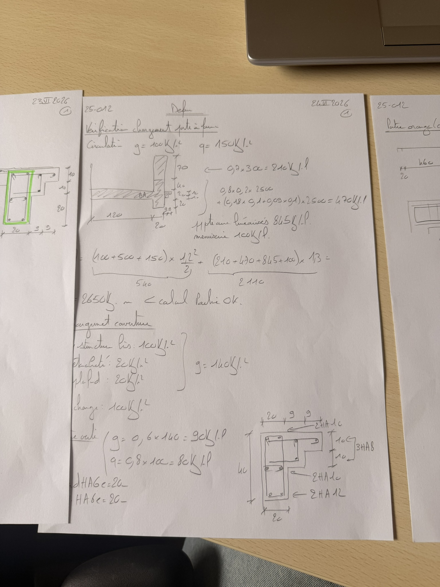
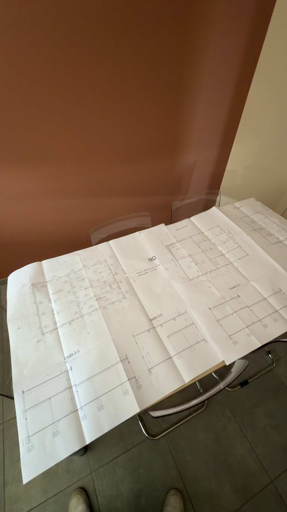

Guivibat Ingénierie
Assistant ingénieur structure, du calcul jusqu'au plan de ferraillage. Un stage où je suis des dossiers complets plutôt que des tâches détachées de leur contexte.

Le poste Assistant ingénieur structure
Guivibat Ingénierie est un bureau d'études structure implanté à Andrézieux-Bouthéon. J'y effectue mon stage de deuxième année de cycle ingénieur, du 1er juin au 11 septembre 2026, intégré à l'équipe conception sur des dossiers réels et avec des délais réels.
La particularité de ce stage, c'est que je suis des dossiers de bout en bout plutôt que des tâches isolées : je reprends les hypothèses de départ, je mène les calculs, je produis les plans, et je vais jusqu'à la livraison du dossier au client.
Missions Un dossier de A à Z
- Reprise des hypothèses et des données d'entrée. Lecture des pièces du dossier, définition des cas de charges et des combinaisons, choix des matériaux.
- Calculs de structure sous Eurocodes. Descentes de charges, dimensionnement d'éléments béton armé et métalliques, vérifications aux états limites ultimes et de service.
- Dimensionnement d'assemblages selon EN 1993-1-8. Calcul de tiges d'ancrage M16, vérification au cisaillement et à la traction, hypothèses conservatives assumées et justifiées par écrit.
- Production des plans de coffrage et de ferraillage. Mise au net, cotation, nomenclatures d'aciers, vérification de la cohérence entre le plan et la note de calcul.
- Livraison du dossier au client. Assemblage des pièces, relecture, prise en compte des remarques et transmission finale.
En images ✏️ assets/img/parcours/



Outils et méthodes
C'est en menant ces calculs que j'ai commencé à automatiser mes propres classeurs, faute de trouver un outil qui faisait exactement ce dont j'avais besoin. Ces feuilles sont devenues un projet à part entière, visible dans la section projets.
Ce que j'en retiens
Un calcul juste ne suffit pas : il doit être relu, tracé et défendable six mois plus tard. J'ai appris à écrire mes hypothèses avant d'écrire mes formules, et à ne jamais envoyer un plan sans l'avoir confronté à la note de calcul.